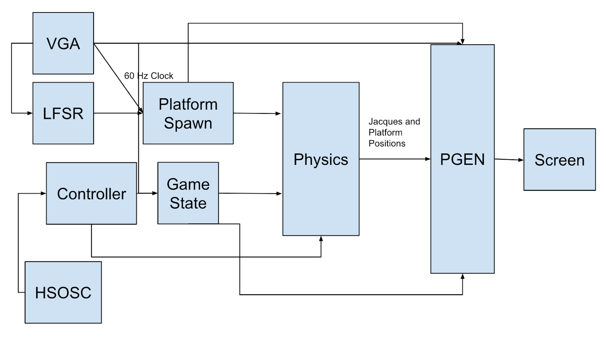
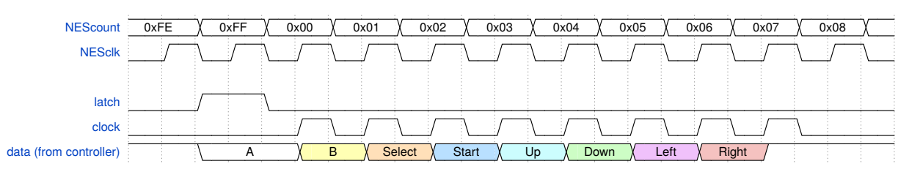
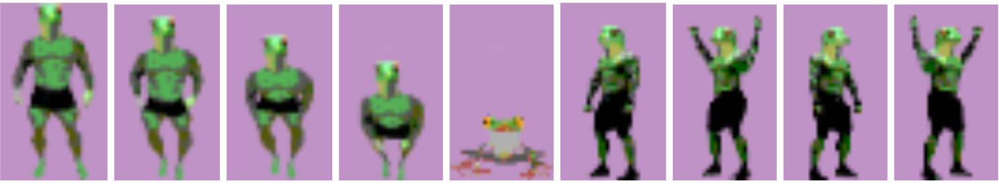
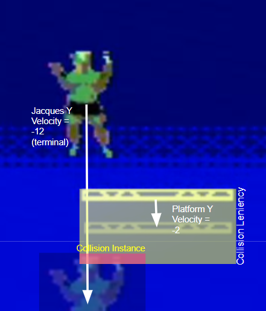

In our project, Jacques Jumper, you control a humanoid frog named Jacques. His goal is to survive by jumping in between falling platforms. If he comes in contact with the bottom of the screen or jumps too high and leaves the screen, Jacques dies and the game is over. You can move Jacques left or right by using the respective buttons on an NES controller. To jump upward, the user can either press the B button to get a short but quick jump or hold the A button to charge up and jump across the screen. There is no specific win condition to our game. Your only mission is to charge your jumps and cleverly choose which platform to land to avoid losing.
At a high level, our project starts at our VGA module. This is where we get the 60 Hz clock that we use in the majority of our other modules. We have a game state module that ends the game when Jacques has passed away and begins the game when the user presses the start button on the NES controller. The position, movement, and interaction between all of the “entities” is then calculated in our physics module. This includes the platforms and Jacques himself. Finally, the pattern generator module draws in the characters, platforms, and background from our ROM files and displays them onto the screen depending on which game state the user is currently in.
VGA: The VGA module takes input from a PLL, a high speed oscillating clock that outputs pulses at a rate of 25 MHz. It then uses that clock to drive a row and column signal. These two signals drive the pixels of the screen such that on each pulse, a new pixel is drawn in a column and after 800 pixels are drawn in a column, the column resets and draws in the next row down. While this sounds complex, ultimately what it allows us to do is draw 640x480 pixels at 60Hz meaning we effectively have a 60Hz refresh rate screen upon which we can base the rest of our game off of. From the VGA module, we outputted a 60Hz clock signal that we used to drive the rest of our modules. The row and column individually were also outputted to Pattern Generation for some difference calculations.
Controller Inputs: The controller module relies on three different variables: data input, latch, clock. We get the clock to time the controller with the FPGA's internal high oscillating clock. We then slow down this clock to a suitable pace for the controller to handle, and use a latch that would tell the controller when to check for inputs. There were eight total buttons, and if one of them is held down after the latch goes off, the controller will output a high at the specific time as seen in the graph below. These outputs would then be stored in a shift register, with each bit representing a different input from the controller.
Character Sprite: Since Jacques is an original character, the artwork for each character sprite had to be created from scratch. The process of creating Jacques involved photoshopping a frog mask onto a bodybuilder's body, which would in turn give us the character we intended to make (a muscular, human-like frog). The photoshopped image would then be transferred to a website that would pixelate the image with a 6-bit color palette, giving us a pixelated version of Jacques. All images were assigned a “transparent color” value which filled the extra space in the box they were generated in. This would become the “others” case in our ROM. This value acted as a garbage value that would not be generated on screen, while all other pixel values for Jacques would. After refining and color-correcting the image, it was then turned into a file that would be read by a C++ script, turning each pixel into a line used in a ROM file. Jacques would have to have a total of 9 different sprites that represented each animation we wanted to implement. Note that we simply mirrored the left and right sprites in order to save space.
Physics Engine: The physics engine forms the foundation of gameplay, handling all movement and collisions between Jacques and the platforms. We designed it around a 60 Hz clock, which updates position and velocity signals every frame. Four core constants—gravity, run acceleration, friction, and collision leniency—govern the physics behaviors. Horizontal movement is driven by acceleration and capped by a terminal velocity; once reached, Jacques glides at a constant speed until friction slows him down when input stops. Vertically, Jacques interacts with constantly falling platforms, which are repositioned via an LFSR when they exit the screen. Collisions are predicted one frame ahead using lookahead calculations. If Jacques is detected to be landing, a flag is triggered to “lock” him on the platform and sync his vertical speed. Only when this flag is high can Jacques perform his jumps: a short hop with a button press, or a charged jump based on how long the button is held. This balance of anticipation and player control makes the movement smooth and responsive.
Game States: We had two variables working in tandem to determine what game state we were in. One named death which kept track of when Jacques had moved onto the next realm, and the other named states told the pattern generator which screen to display and when the physics should run. Both values initialize to 0, and the user begins at our tiled brick start screen. Once the user presses the start button on the NES controller, states receive a value of 1 and Jacques spawns in the middle of the screen at the top on a platform. This is also when the physics module begins to run, and the game runs as normal. This continues until Jacques reaches a death condition, whether that be him hitting the top of the screen or him hitting the bottom of the screen. This turns the death variable to one, turning the state variable back to 0 and sending the player to the start screen. This cycle repeats, except every time the player hits the start button again, death is set to 0 and the game can run for as long as the user would like.